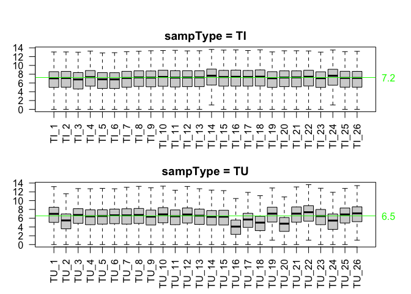

This package contains data from NCBI GEO Series GSE112679. Data methylation profiles were collected to investigate genome-wide mapping of 5-hydroxymethylcytosines in circulating cell-free DNA as reported in Cai et al. (2019) (https://gut.bmj.com/content/68/12/2195).
| Item | Title |
|---|---|
| TUTI_featureCount | A matrix of feature counts for the matched Tumor/Tissue samples |
| Train_featureCount | A matrix of feature counts for the samples in the training set |
| Val1_featureCount | A matrix of feature counts for the samples in validation set 1 |
| Val2_featureCount | A matrix of feature counts for the samples in validation set 2 |
| genes_annot | A data frame describing the features |
| sampDesc | A data frame describing the samples in the GSE112679 dataset |
# install.packages("devtools") devtools::install_github("12379Monty/GSE112679")
sampType is used to distinguish blood from tissue samples. The latter can be tumor or tumor adjacent (sampType==TI).
with(sampDesc, table(sampType, trainValGroup, exclude=NULL)) #> trainValGroup #> sampType Train Val-1 Val-2 <NA> #> blood 1120 1194 240 0 #> TI 0 0 0 26 #> TU 0 0 0 26
with(sampDesc %>% dplyr::filter(sampType=='blood'), table(outcome, trainValGroup, exclude=NULL)) #> trainValGroup #> outcome Train Val-1 Val-2 #> Benign 253 132 3 #> CHB 190 96 0 #> Cirrhosis 73 33 0 #> HCC 335 809 60 #> Healthy 269 124 177
with(sampDesc %>% dplyr::filter(sampType=='blood'), table(outcome2, trainValGroup, exclude=NULL)) #> trainValGroup #> outcome2 Train Val-1 Val-2 #> BenignHealthy 522 256 180 #> CirrhosisCHB 263 129 0 #> HCC 335 809 60
with(sampDesc %>% dplyr::filter(sampType=='blood'), table(outcome3, trainValGroup, exclude=NULL)) #> trainValGroup #> outcome3 Train Val-1 Val-2 #> HCC 335 809 60 #> nonHCC 785 385 180
TUTI_samdesc <- sampDesc[colnames(TUTI_featureCount),] with(TUTI_samdesc, table(sampType, tissueSubtype,exclude=NULL)) #> tissueSubtype #> sampType tumor adjacent sample tumor sample #> TI 26 0 #> TU 0 26 par(mfrow=c(2,1), mar=c(4,3,2,3),oma=c(0,0,2,0)) for(ST in unique(TUTI_samdesc$sampType)){ ST_ndx <- which(TUTI_samdesc$sampType==ST) boxplot(log2(TUTI_featureCount+1)[,ST_ndx], outline=F, las=2, ylab='log2(count+1)', xaxt='n') axis(side=1, outer=F, at=1:length(ST_ndx), label=TUTI_samdesc$title[ST_ndx],las=2) title(paste('sampType =', ST)) sample_median <- apply(log2(TUTI_featureCount[,ST_ndx]+1),2,median) abline(h=median(sample_median), col='green') axis(side=4, at=round(median(sample_median),1),las=2, col.axis='green', line=-0.5,tick=F) }

Please note that the ‘GSE112679’ project is released with a Contributor Code of Conduct. By contributing to this project, you agree to abide by its terms.